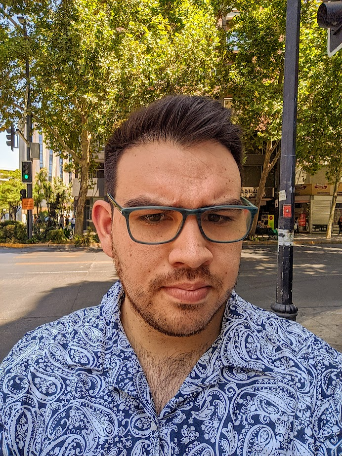

Daniel Toledo Fuentes | WDD 130
Hello everyone! My name is Daniel Toledo Fuentes, and I'm originally from Rancagua, Chile. This is an exciting time for me as I'm starting my first semester at BYU-Idaho, diving headfirst into the world of web development through the WDD130 course. I've always been fascinated by technology in all its forms – from the latest smartphones to the intricacies of home automation. You could say I'm a bit of a geek at heart, with a passion for comics, movies, series, and all things pop culture. On a personal note, I've been happily married since 2017, and while we don't have children yet, our household is full of furry friends with five dogs and three cats. I'm eager to pursue my degree and make the most of this opportunity to grow both personally and professionally. My goal is to provide a better future for my family, and I believe that honing my skills in web development is a significant step towards achieving that. I'm excited to collaborate with all of you and learn as much as I can throughout this course.